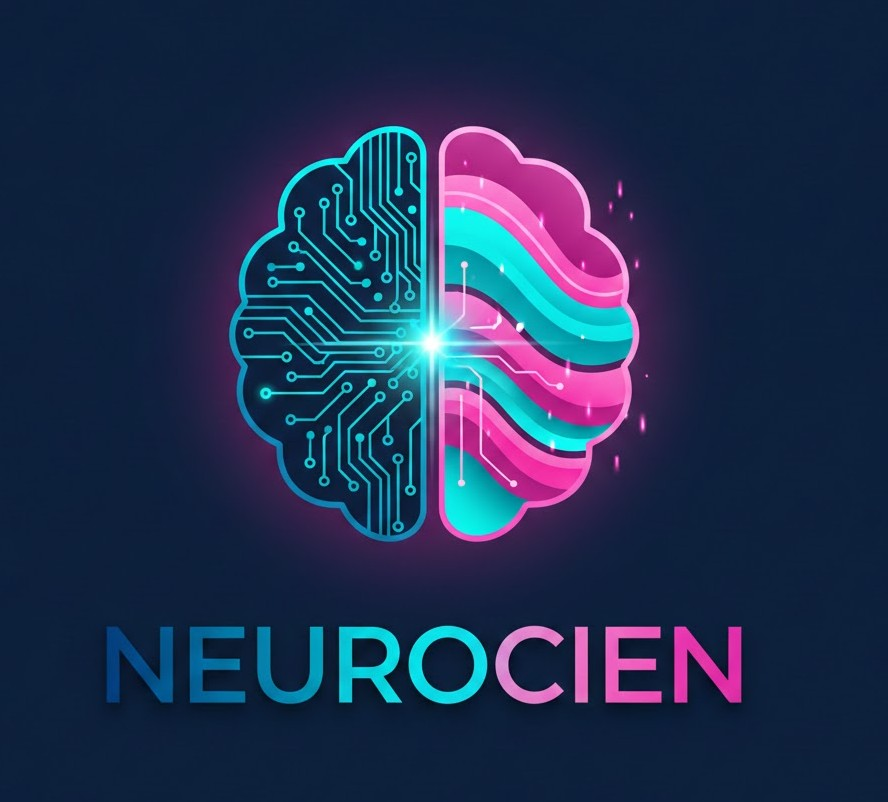

Acompañamiento emocional preventivo, antes de que el malestar se vuelva crisis.

Muchas personas viven cansancio emocional, ansiedad, tristeza o confusión sin saber si es “suficiente” para pedir ayuda.
No quieren diagnósticos, ni exposición, ni procesos invasivos. Solo necesitan entender qué les pasa y no estar solas en el proceso.
Entre “estoy bien” y “necesito ayuda urgente”
existe un vacío enorme.
Ahí nace NeuroCien.
NeuroCien es una plataforma digital de salud mental preventiva y progresiva. No busca curar ni diagnosticar.
Busca ayudarte a comprender, regular y cuidar tu mundo emocional antes de que el malestar se vuelva crisis.
La salud mental no es ausencia de malestar.
Es capacidad de autorregulación.
Un primer espacio seguro que escucha sin juzgar y te ayuda a entender lo que sientes.
Psicología y neurociencia explicadas de forma simple y aplicable.
Herramientas breves adaptadas a tu ritmo y nivel de energía.
Confidencial · A tu ritmo · Sin juicios